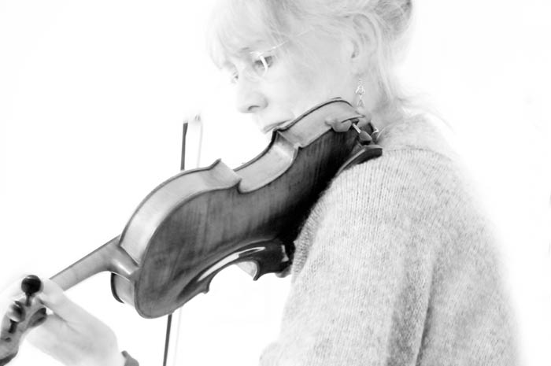

	<div id="oneCol" class="row">
    <div class="large-12 columns">
        <div class="medium-10 medium-offset-1 end columns">
        <p>&quot;<a href="../../links/index.html">The Oxford Concert Party</a> are a group of talented musicians . They defy the sterile world of the concert hall and, with an original and kaleidoscopic repertoire, make music accessible to all with passion and  energy, humour and sensitivity, skill and experience. They take their listeners on a journey which transforms, heals and humanises, especially those imprisoned by isolation, disability, illness or walls.&quot;</p>
		</div>
		<div class="center">
        <a href="ocp002.html" title="Click for next Oxford Concert Party photograph"></a>


    <span class="links"><a href="ocp002.html">next</a></span>
        </div>
     </div>
</div>
